The Omega-IS Project Group
Mikael Heimann, Mats Lundälv, Tomas Tjus & Keith E. Nelson
Omega
- interactive
sentences
Manual
– Editors
Omega- is
version 1.2
ã
Heimann, Lundälv, Tjus & Nelson,
2004-2006
Topic Dos Hb, Meloton Hb, Tomas Tjus
Psykologbyrå & SuperImpact Images, Inc (USA)
Developed In association with Center for Child & Adolescent Mental Health, University of Bergen, Norway; Department of Psychology, Göteborg University, Sweden; DART, The Queen Silvia Children’s Hospital, Göteborg, Sweden; and Department of Psychology, Penn State University, USA.
Translation: Åsa Mühlenbock and Mats Lundälv
Content
Chapter D: Editing lesson material – the Lesson and Animation editors 21
Overview...
22
Exercises
– content and structure.
22
Two
lesson examples.
24
Example
1: A lesson with video sequences.
24
Example
2: A lesson with Omega animations.
25
The
files and folders of Omega-is.
30
The
installation folder of Omega-is – an overview..
30
The
”anim” folder:
31
The
”lesson-en” folder - English lessons:
33
The
”media” folder:
34
The
”register” folder – pupil settings and
data.
35
Summary
- conclusions.
36
1.
A lesson based on video sequences.
36
2.
Lessons based on Omega animations.
36
Chapter E: The Lesson Editor.. 37
Overview...
37
Tweaking
existing lessons.
39
Example
1: Remove a word/item from an existing lesson:
39
Example
2: Add a word/item to an existing lesson.
41
Create
new lessons.
42
A
new three item lesson – existing material
42
A
new three item lesson – new material
43
Recording
new words/phrases.
44
Making
new lessons available.
44
Advanced
– variables, stories etc.
45
Variables
- references.
45
Linked
animations.
46
Stories.
46
Functions
and commands.
48
Chapter F: The Animation Editor.. 51
Overview...
51
Minor
changes in existing animations.
53
Adding
new actors to an animation.
53
Changing
the length of animations.
54
Changing
the background image.
56
Changing
the positioning of the animation path – in the scene
57
Changing
the shape of animation paths – in the scene.
57
Creating
simple new animations - basics.
58
Starting
the Animation Editor.
58
Selecting
the background.
58
Adding
and adjusting ’wings’/’props’
58
Adding
and adjusting actor paths – on stage.
60
Adding
and adjusting new actors.
62
Adjusting
paths and events on the TimeLine.
63
Advanced
functions.
65
Internal
animation.
65
Using
variables.
65
Tips
and tricks.
66
Functions
and commands.
68
Image
formats.
73
Backgrounds:
73
Actors.
73
Wings/props.
73
|
D |
|
|
An exercise – ”lesson” – in Omega-is consists on one hand of its contained text material (words/phrases etc.), on the other hand of the media material that is used. The media material consists of recorded speech (for every word/phrase), and of the animations (with their attached image and sound files) or video clips, corresponding to the sentences that can be created in the lesson.
The uniqueness of Omega-is is not only the richness of the contained language material, represented as text, speech and animations. It is also the included tools for editing and complementing this material. These tools are the Lesson and Animation editors.
To manage these tools correctly it is useful to have a somewhat deeper understanding of how the lesson (text) and media material is created and interconnected.
In this chapter we try to give an overview of these issues; How the editors relate to each other, to the lesson and media content, and how this is displayed in the exercises.
In the two following chapters the two editors are described separately and in detail.
NOTE! We don’t want to spread any illusions about that it will be very easy and quick for each and everyone to create lots of new lesson material in Omega-is. To handle multimedia based content of this kind will in general require quite some media and computer management skills and, in particular, time and interest. To make exercises in Omega-is you will also have to become familiar with how the program and its tools are operating. We who developed Omega-is are not expecting that most teachers or parents will go and grab these tools to produce new exercises. On the other hand we do expect that a limited number of particularly interested persons will want to try and contribute new content. We also want to show that you may approach the editing tools on quite different levels of ambition. You can start by making small and relatively simple changes and additions to the existing material.
We also want to encourage the initiation of small to more extensive projects – locally, or in co-operation with us producers – to collectively contribute to an increased amount of stimulating and educationally useful exercises for different target users. We encourage all users to watch our web site at www.omega-is.com where new exercise content will be made available over time. We will also help to provide adequate education for interested parties. Now, good luck in finding your way to the inner secrets of Omega-is in this and the following chapters, and enjoy!
Let us start with a figure covering the material that constitutes a lesson :
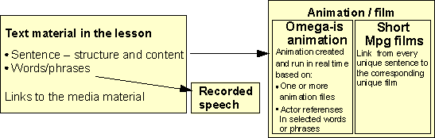
The building blocks of a lesson : Text, structure, links and media
As shown in the above figure the basic components are relatively easy to distinguish. The text material of the lessons will by now be familiar to the reader, as will the accompanying recorded speech. The distinction between two different media types - Omega-is animation and mpg film - may be more surprising? This may be because almost all the included lesson content is based on Omega-is animations. An example of the use of mpg films is currently found only in the ”Demo3” lesson in the ”X-Demo” folder – in the sentences ”the cup jumps over the hand” and ”the cup jumps over the cup”. We will below study the clear difference in management of lessons, or individual sentences, based on animation or mpg film respectively – advantages and disadvantages. (Note! QuickTime .mov film files and .mp3 sound files may also be used since version 1.2!).
In the above figure, some of the more complex aspects of the lesson material are hidden behind the words ”structure” and ”links”. A couple of lesson examples will show what these structures and links may look like, where the different lesson and media files are stored in the folder hierarchy of Omega-is, and how you give the learner access to new lessons.
We will now study two example lessons: One is based on short video film clips – so called mpg or mov files – of the kind you can generally make with digital cameras. The other lesson example is based on animations made with Omega-is’s own animation program. The aim is to obtain a general familiarity with the editing tools, the lessons, and their related media material. The details concerning the use of the Lesson and Animation editors will be covered in the two following chapters.
· Start the ”Lesson Editor”
· Select ”File” – ”Open” - or click the ”Open” icon – (the folder)
· The content of the “omega” folder will be displayed: Open the ”lesson-en” folder
· Then open the ”PassiveLessons” folder
· Open the lesson ”HandCupJumpExample.omega_lesson”
The screen should now look like the image below:
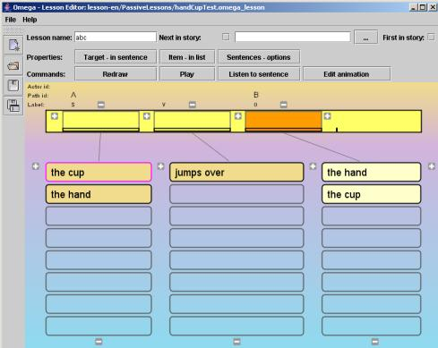
· Click on (e.g.) ”the cup” (in the left column), then ”jumps over”, then ”the hand” (in the right column). The words will be spoken and placed in their respective ”slots” in the ”Sentence Line”.
· Click on the ”Listen to sentence” button to hear the whole sentence spoken.
· Click on the ”Play” button – and a short video sequence will be presented, illustrating the meaning of the sentence
· Test swapping one (or two) of the words in the sentence by selecting the desired word(s) in the ”word lists”
· Click on ”Play” again to see a video clip for the new sentence.
How is the correct video clip found?
· Click on the ”Sentences – options” button
The following dialogue window will be shown:
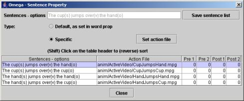
Here you can see the four sentences/ which can be created in this exercise. As you can see, every sentence has been linked up to a ”Specific” so called ”Action File”, i.e. short video clips in the form of MPG or MOV films. Note where the films are stored – the ”relative path”; ”anim/ActiveVideo/…”. This path has its root in the ”omega” folder, i.e. the folder where Omega-is is installed on the hard disk of the computer. The bottom sentence in the list – ”The cup jumps over the hand” – is illustrated by the film ”CupJumpsHand.mpg”.
· Try to (re-)find this film by:
1. Clicking on / selecting the bottom sentence in the list
2. Clicking on the ”Set action file”
3. Finding the file ”CupJumpsHand.mpg” by browsing – from the “omega” folder – to the ”anim” folder – and then further to the ”ActiveVideo” folder. Select ”Cancel” when you’ve found the file.
This example has shown how a simple lesson based on video clips can be created:
Ø Two nouns (”the cup” and ”the hand”), which can act as a subject or an object, plus a verb phrase (”jumps over”), can together be combined into 4 sentences.
Ø These sentences require 4 unique illustration films – here stored in the folder ”../omega/anim/ActiveVideo/”.
Ø The lesson ”HandCupJumpExample.omega_lesson” is English, and will therefore be found somewhere in ”…/omega/lesson-sv/…” – here in the ”PassiveLessons” folder.
Ø The lesson is also referring to audio files. More on this in the next example.
· Start the ”Lesson Editor” – if it’s not already running
· Select ”File” – ”Open” - or click on the ”Open” icon – (the folder)
· Open the ”lesson-en” folder
· Then open the ” LessonTemplates” folder
· Open the lesson ” 3WordsExercise-s-v-o-closed.omega_lesson”
The screen should now look something like below:
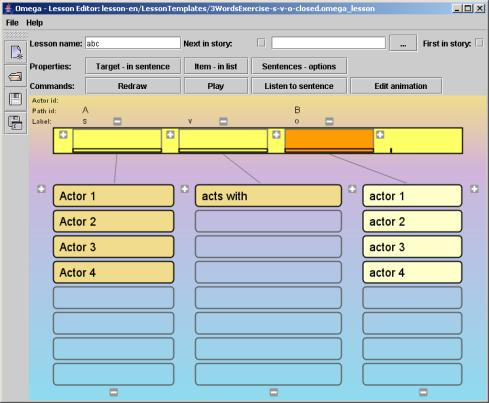
As you may see, this is the same lesson template which is displayed when the Lesson Editor is started.
· As in the previous example, you could start by creating a few sentences by selecting words in the lists. Use the ”Listen to sentence” and ”Play” buttons to examine the results!
In this lesson, no video sequence is presented on ”Play”. Instead an animation is run, created in Omega-is’ own animation program – in different variations, depending on which words – and thereby ”actors” – that have been selected for the sentence.
In this lesson 16 different sentences can be created (4 x 1 x 4 = 16). If video clips or traditional animations would have been used, 16 different films would have been required to illustrate all combinations. But here we can make do with just one (1) animation, which is created and performed with a cast of actors – finally decided by each unique sentence.
· Click on the ”Sentences – options” button to inspect the overview of possible sentences! Compare to the previous example:
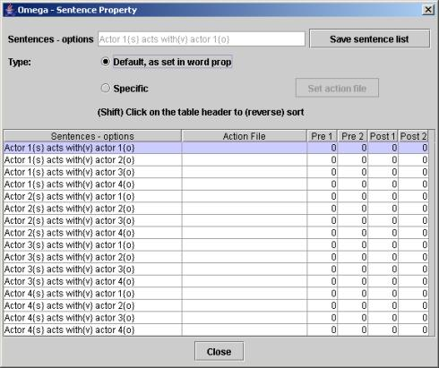
Now you see no links to an MPG film for each sentence. Instead the ”Default, as set in word prop” alternative is ticked.
So where can we find these word properties with links to an animations and actors?
· Close the ” Sentences – options” dialogue (above)
· Click on the ”Item - in list” button (or right click on any word in the lists). An ”Item property” dialogue is opened.
· Select the button with verb phrase ”acts with” in the list. The following dialogue should be displayed:
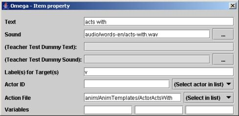
Let’s take a closer look at the content of the ”acts with” item. For the moment we’ll concentrate only on the two entries referring to media files:
Ø In the ”Action file” entry there is a reference to a file called ”anim/AnimTemplates/ActorActsWith”. Click on the”Select in list” button and browse for the animation file ”ActorActsWith.omega_anim”. It will be found in the ”AnimTemplates” folder which, in its turn, is found in the ”anim” folder in the ”omega” folder. Select ”Cancel” when you’ve found your way to the file.
Ø The second reference to a media file is found in the ”Sound” entry. It links to the sound file ”audio/words-en/acts-with.wav” (or acts-with.mp3). This is an audio file with recorded English speech, placed in the ”words-en” folder, which is found in the ”audio” folder – within the ”media” folder – in the ”omega”-folder.
Does it feel overwhelming to keep track of all these documents and folders within folders? That’s fully understandable. This will become clearer after a while, and we’ll support you with an overview of the folder and document structure in the next section.
The names of the media files are generally in English – for all languages – to make it as easy as possible to manage links to corresponding media and lesson files for different language versions of Omega-is.
· Now click – with the Omega - Item property dialogue still open – on one of the other items/words, e.g. ”actor 1” in the left list.
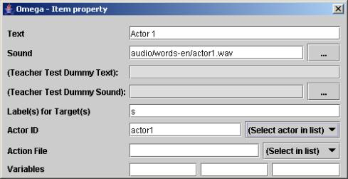
The content of thei dialogue now shows the properties for this item/button: The Text and the link to the appropriate Sound (like before). Note that for this item there is no link to any Action file, but instead there is an Actor ID – ”actor1”.
· Click on the ”(Select actor in list)” button. There you should find the following ”actors” to choose from: actor1, actor2, actor3, actor4 and banana. These actors are available in the Omega animation ”ActorActsWith.omega_anim” – which was linked to in the properties of the previous item (“acts with”).
Further details concerning the item properties will be left until later.
We’ll approach the end of this example by making a first acquaintance with the Animation Editor:
· Make sure you have created a full sentence in the Sentence line
· Then click on the ”Edit animation” button. The Animation Editor will now be started – with the animation which is linked to the sentence:
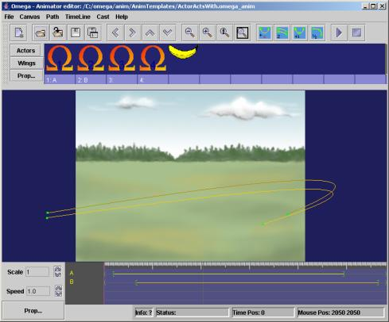
Here we can see the animation ”ActorActsWith.omega_anim”, ready for editing. The four actors that were listed earlier in the Lesson Editor can be found in the Actor List in the upper part of the screen – four Omega actors. In addition there is an unused banana actor.
We will not now go very much deeper in the exploration of the secrets of the Animation Editor; We will returm to this later in Chapter F. For now we will limit ourselves to taking a brief look at the Actor Properties:
· Open the Actor Properties by right clicking on one of the actors, e.g. the first Omega actor, to the left in the list. The dialogue window (below) shows the properties of the currently selected actor.
Notice the Actor ID – e.g. ”actor1” – which is called upon from the lesson in order to link each ”actor word” in the lesson to the corresponding actor in the animation!
Also note that this is where the appearance of each actor is decided by the link to a certain image file, in this case the image ”actor_1.png” in the ”actor” folder – which is found within the ”media” folder.
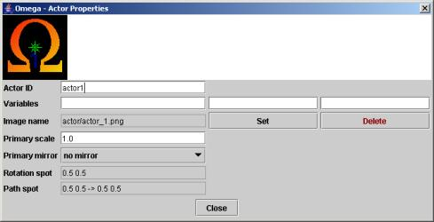
Now close the Actor Property dialogue. Please note that the two first/leftmost actors, which have the ”labels” 1 and 2, are linked to their respective animation path via a ”Path ID” (”A” and ”B”). The paths are represented at the bottom of the screen, along the ”Timeline” – with their respective IDs – and are also found on the animation ”stage”. (These ”Path IDs” - ”A” and ”B” – are also referred to in the Lesson Editor – on top of the target word boxes in the Sentence Line. More on this in the chapters on the Animation and Lesson editors below.)
Feel free to test run the animation in the Animation Editor by clicking on the ”play” button in the top right corner. The two actors with the labels 1 and 2 will be used, which are also linked to the paths IDs ”A ”and ”B”. You can test another actor by dragging one of these labels to the position under the desired actor.
Finish this example by closing the Animation Editor (confirm with a Yes), and after that also the Lesson Editor.
The above examples have given a first insight in which documents/files that are used for the lessons and animations of Omega-is. It should already be obvious that there are a lot of them, and we have still just scratched on the surface. This is not said to scare you off, but to give a realistic understanding of the complexity that is unfortunately more or less necessary for a multimedia program of this kind.
You don’t need to have a full control over all this to start playing around a little with simple editing though. The program will give you support to find your way. But more insight will make it easier to understand and avoid unnecessary problems.
To support your navigation in this territory, we provide you with an overview of the folder structure of the Omega-is installation below, including some information about where different files are stored in this folder structure.
In Windows Omega-is is normally installed on the hard disk in an ”omega” folder under ”Program Files” folder/directory (”Program” in Swedish and some other systems). The basic directory structure should look like this:
The Omega-is install folder
The ”anim” folder contains the animation files and video clips that are used to illustrate the language material of Omega-is.
The ”lesson” folders contain the lesson files – for the installed languages. The English ones are found in ”lesson-en”, the Swedish ones in ”lesson-sv”, etc.
The ”media” folder contains all the media material of Omega-is (except the video clips in ”anim”), i.e. all image and sound files (including those used in the animations), recorded speech for the installed languages, and more.
The ”register” folder contains settings and data for the students/pupils that have been set up.
The other folders are skipped, as they are of a more technical character.
So let’s proceed by taking a closer look at the folders highlighted above.
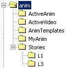The animation files of Omega-is are text documents in the XML format. They contain no media material in themselves, but refer to images and sound files stored in the ”media” folder. The animations are organised in the following folders:
”ActiveAnim” – contains all animations that are in use, except those belonging to the stories (L1 and L3) which are found under ”Stories”.
A few animation templates are found in ”AnimTemplates.
An empty ”MyAnim” folder is prepared for home made animations.
The very limited number of video illustrations in Omega-is are stored in the ”ActiveVideo” folder.
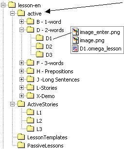The ”active” folder contains the lessons that are available in the pupil menu – the B, D, F, H, J, L and X lessons, etc.
The program itself creates the menus according to the content of the ”active” folder. This can in its turn contain folders, and finally a folder with an ”xxx..omega_lesson” file which launches a lesson – such as the ”D1.omega_lesson” in the example to the left! The lesson files are (like the animation files) stored in XML format.
Each folder must contain an image called ”image.png”, and ideally also another one called ”image_enter.png”. These images represent the folders or lessons in the menus.
The ”stories” material is placed in a special ”ActiveStories” folder – except the first part of each story, which is found in the L folder under ”active”.
Apart from this there is the ”LessonTemplates” folder, and the ”PassiveLessons” folder for work material etc.
T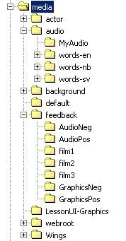he ”media” folder contains a lot! We will have to limit ourselves here to giving a brief overview of all this content:
The ”actor” folder contains all the image files that are used for actors in the Omega animations. They are distributed over a number of sub folders. Some image files will be duplicates, or variants, found in more than one folder. The image file format is PNG (Portable Network Graphics) with transparent background (either 256 colours + indexed background, or millions of colours + so called Alfa Channel). There is also a folder for your own new actors – ”MyActors”.
The ”audio” folder contains most of the sound files of the program. They are all in so called wave or mp3 format (”xxx.wav” or ”xxx.mp3”), and they have two kinds of functions:
1. The sound effects which are used in the animations – stored directly under ”audio”
2. The recorded speech files for the lessons – stored within folders for the installed languages – ”words-en”, ”words-sv” etc.
There is also a folder prepared for your own sounds – ”MyAudio”.
The ”background” folder contains the background images for the animations – usually in the JPG format. Here is also a folder for your own material - ”MyBackgrounds”.
In the ”feedback” folder there are films, images and sounds used for feedback during runtime - in the ”Test” mode.
In the ”Wings” folder you will find the images used for “props”, “set pieces or “side-scenes” in the sceneries of Omega animations.
 Here
you will find a folder for each registered pupil. The folders contain
one file for the pupil settings – ”pupil_settings.xml”,
and possibly one pupil image (”id.jpg”). These files are
created when a new pupil is entered, and will be updated when the
pupil settings are altered – that is in ”Teacher”
mode.
Here
you will find a folder for each registered pupil. The folders contain
one file for the pupil settings – ”pupil_settings.xml”,
and possibly one pupil image (”id.jpg”). These files are
created when a new pupil is entered, and will be updated when the
pupil settings are altered – that is in ”Teacher”
mode.
Additionally you will find date stamped recordings of the pupil activities, which can be further studied under ”Results” in ”Teacher” mode.
This brings us to the end of this introduction to the editing tools of Omega-is, and its data files and directory structure.
We finish off by re-iterating the two lesson exemples described above, and by drawing some conclusions about the two types of Omega-is lessons which they represent:
Features: Is based on links to recorded video clips for the sentences, and on recorded sounds for the individual words/phrases
Pros: Simple structure - fewer references - just video/mpg/mov files (for sentences) and sound/wav/mp3 files (for words/phrases) to keep track of.
No need to master the Animation Editor to produce your own material.
The dramatising and filming of scenes, representing language expressions, could become an inspiring part of an educational strategy where Omega-is is used to actively perform and process concepts, relations, situations and feelings and their corresponding language representations.
Cons: Requires one film per possible sentence, which could mean an awful lot of space consuming media material for more complex exercises.
Many sentences/scenes could be difficult to represent by simple video clips (unless starting up more ambitious projects with animated film or film tricks of course).
Features: Are based on links to Omega animations for the sentences – with references from contained words/phrases to different actors in the animations, and on recorded sounds for the words/phrases.
Pros: Effective and flexible: One animation can represent several (sometimes all) sentences of a lesson. A lesson, containing hundreds of possible sentences, can be built on just a few animations.
Cons: More complex structure – several kinds of references (and possible variables) to keep track of - from the words in the lesson to different animations, and to different actors and their paths in the animations.
You will of course have to learn to handle the Animation Editor to make and edit material based on Omega animations.
|
E |
|
|
The Lesson Editor allows you to create new lesson material. This could range from minor adjustments of existing material, to the creation of brand new lessons and lesson content to meet the needs and motivational factors of a specific student
The Lesson Editor is a self-contained program which is opened by selecting Lesson Editor from the Start Menu.

NOTE! The Lesson Editor records whether a lesson has been changed! If changes haven’t been saved, this is marked in the “title line” of the window, and a warning is given on ”Quit”, ”Open” or ”New” commands.
When started, the program presents a default option allowing you to create a new lesson based on a lesson template (see below). Now, however, the task is to make changes in an existing lesson.
1. Click on the Open symbol, or select File – Open.
2. Open the language folder containing your existing lesson e.g. lesson-en for an English lesson.
3. Open the Active folder.
4. Open the folder representing the lesson level (B-D-F etc.) for your target lesson
5. Then find and open the actual folder of the lesson you want to tweak – and finally open the lesson file itself (with a name ending with ”.omega_lesson”).
Let’s say you want to remove a word that is so disturbing for your student he/she has problems to use the lesson. The word, and its links to animations and sounds will be removed. In the following example the word ”the bag” in the Xercise-B2 lesson will be removed. Do as follows:
· Start the Lesson Editor and the lesson Xercise-B2 in the ” Xercises” folder in the ”X-Demo”-lessons. If a word would really have to be removed, the procedure would have to be repeated for each lesson containing the word.
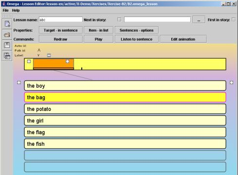
· When the lesson is opened, all the contained words are shown in the items list.
· Click on the ”Item - in list” button – or right click on any of the words in the items list. Then the ”Item: Property” dialogue is displayed (see below).
· Then click on the item ”the bag” in the list. The properties for this item are shown in the dialogue window, as seen below. Place the cursor and erase the text of the field ”Text”. Close the dialogue and save the changes (before the Lesson is closed) – by clicking on the disk icon (Save) or open the File menu and select Save. Now the item ”the bag” will not be there when working with this lesson.
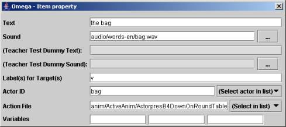
· Open the lesson to which you want to add a word. Again we will use the lesson Xercise-B2 as an example. Browse via the ”lesson-en”, ”active”, ”X-Demo” and ” Xercises” folders to find the lesson. Open it so that the list of words/items of the lesson is displayed.
· Click on the ”Item - in list” button – or right click on one of the items in the list – so that the ”Item property” dialogue is opened.
· Then click on an empty item button – below the current words of the list. It is highlighted with a coloured border. Place the input cursor in the “Text” field of the dialogue and type the item you want to add, e.g. ”the vacuum”. The letters will appear in the item button. (This item – ”the vacuum” – happens to be represented by an actor in one of the animations. If you want to add a new item that cannot be illustrated by an actor in the target animation, then you will have to start by adding a suitable actor (represented by a corresponding image file) to an existing or new animation – see the next chapter F.)
· Click on the browse button ”…” next to the Sound field. Find the sound file for ”the vacuum” recording (vacuum.wav(mp3) in the Media/Audio/words-en folder). Double click on the file, or select it and then select the ”Load” button. This completes the linking to the recorded sound file for the item.
· New sound files can be recorded via a microphone connected to the microphone input of the computer. You can use the ”Sound Recorder” utility of Windows, but we can for example recommend the free program Audacity (http://audacity.sourceforge.net), the sound utility of the CD/DVD package Nero, or some of the many other utilities for sound editing that can be found in the market (e.g. GoldWave, SoundForge etc.). NOTE! The sound quality of files recorded directly into computers may vary a lot. It may be a good idea to consult a person who knows a little about sound recordings to improve the quality. Save sound files in the wav or mp3 format, and put them in the ”media/audio/words-en” folder (or appropriate for other languages).
· To establish a link to a representative animation for the item, first an animation - or so called ”Action file” – must be chosen, which contains an actor that represents the item. This is done by browsing to the directory for animation files: Click on the ”Select in list” button - to the right of the Action file field – and then on <Select file …>. In this case, find and select the animation file ”B1.omega_anim” in the ”ActiveAnim” folder – and then click on “Select”.
· Finally an Actor-ID must be entered, i.e. the unique label that has been assigned to the actor representing the item in the animation. First click on the item button for ”the vacuum” so that the item text is entered into the ”Sentence line”. Then click on the ”Select actor in list” button (to the right of the Actor-ID field). There you should be able to select the actor ”VacuumCleaner”. (You could also type in this Actor-ID.) Test run!
· Close the dialogue(s) and Save the changes before closing the Lesson Editor.
Existing material can be used in novel combinations to create new lessons. A convenient way to do this is to copy a suitable lesson folder in the “active” folder of the language used, e.g. the D2 folder in lesson-en. The copied folder could be named D4 (the installed version contains D1-D3). Then open this copy D4 in the Lesson Editor. New words/items are entered in the way described above. Appropriate action files (animations), actors and sound files are linked in etc.
If a new lesson with completely new content is created, then corresponding new sound recordings must also be provided, as well as animations with background, wings and actor images, alternatively video clips, in the dedicated folders. The next Animation chapter will tell you more about this. For one, two and three item lessons there are some templates in the Lesson Templates folder.
Below are two examples:
1. How to create a new three item lesson, based on an existing lesson, and on existing animations and media material
2. How to create a new lesson with completely new material based on new video clips and sound recordings
· - Start
the Lesson editor – select File - Open
- Find the
”lesson-en\active\X-Demo\Xercises\Xercise-Demo1” folder
-
Open the ”demo.omega_lesson” lesson found there
· This is a
lesson based on the activities ”chases” and ”jumps
over”. The lesson utilises two animations to illustrate
these actions.
We will now re-use this material with alternative
actors, to be able to play with words and sentences that are not
supported in the original set of exercises.
· - Click
on the word ”chases” so that it is entered into the
Sentence Line.
- Then click on the ”Edit animation”
button – the Animation Editor is
opened with the
animation linked to ”chases” (ChaseChased.omega_anim)
-
Note which actors that are available in the Actors List of the
animation!
· Close the
Animation Editor – then click on ”jumps over”
(which replaces ”chases” in the Sentence Line) and
re-select the ”Edit animation” button – the
Animation Editor is re-opened with the “JumpOver.omega_anim”
animation
- Compare the Actors List with that of the previous
animation (see below)
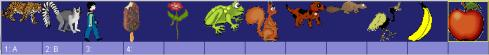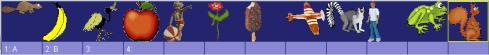
Apparently, among others, a beaver, a frog and a squirrel are found in both.
· We therefore choose to create a “chase”/”jump over” lesson with ”the frog”, ”the beaver” and ”the squirrel” actors (The above animations could of course be saved under new names, and new common Actors Lists for both these animations could be edited and used for the new lesson):
- Select ”File” – ”Save as” to save the open lesson under a new name. A Save dialogue will be displayed according to below.
- Move one level up in the directory structure:
- There (in the ” Xercises” folder) create a new folder, click once and then a second time on the folder name (New folder). Name it ”Xercise-Lesson1”, enter that folder and save the file as e.g. “ChaseJump_new.omega_lesson”.
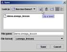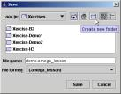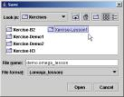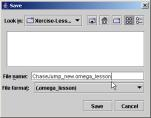
· Now it’s time to change the content of the lesson:
- Produce a sentence in the Sentence Line (e.g. ”The boy chases the icecream”)
- Open the Item property dialogue (click the ”Item - in list” button or right click on an item) and then click on ”the boy” to view the properties of that item.
- In the form, replace the text ”the boy” by ”the frog”
- Click the ”…” button next to Sound and locate the sound file ”frog.mp3” or ”frog.wav” in the ”audio\words-sv” folder.
- In the Actor ID field, erase ”boy” and replace by selecting ”frog” from the ”Välj aktör i listan” by
- Continue by replacing/entering data for all the three new actors; the frog (frog), the beaver(beaver) and the squirrel (squirrel) in column 1 and 3 according to the images below.
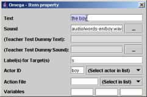à 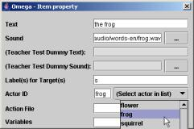
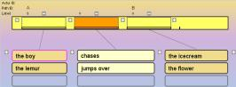à 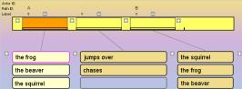
· Test run, adjust and save the new lesson – test in lesson mode.
We will now see how a new lesson can be
created based on brand new media material. We’ll choose to
build on video clips, as this will not require any knowledge
about how to handle the Animation Editor and all image and sound file
management needed for the creation of animations (see chapter F).
We
will need a number of short video clips that illustrate the sentences
we want to play with. We will also need sound recordings for the
contained words or phrases
· We start by
planning the content of the lesson, resulting in the following:
the
princess kisses
the prince
the prince
pushes the princess
This will require 2×2×2=8 video sequences to cover all possible sentence combinations, and 4 sound recordings for the contained words
· Now it’s time to make sure that all these media files are put in place – either by recording them ourselves, or by relying on some other resources.
- Record the four words – see the instructions in the next section – and place the sound files in the ”media\audio\words-en\MyWords” folder under the omega folder. We suggest all files, for all language versions, are given English names – to simplify the maintenance of multiple language versions – i.e.: ”princess.wav(mp3)”, ”prince.wav(mp3)”, ”kisses.wav(mp3)”, ”pushes.wav(mp3)”. (Why not support a second language right away? Place the files in a corresponding folder within ”words-xx”.)
- Now dramatise the 8 actions – either with live actors, or using hand dolls or similar means.
- Record short clips using the video recording option of a standard digital camera, or a real video camera.
- Transfer the video files to the computer and
place them in the ”anim\ActiveVideo” folder, under the
omega folder.
NOTE! The video clips should be
very short, around 3 – 10 seconds.
NOTE also that video
files must be of the MPG or MOV type! Some AVI files may be used
after being renamed with the ”.mpg” file suffix.
· Start the Lesson Editor (if it’s not already running)
- Open the lesson ”3WordsExercise-s-v-o-VideoClip” in the ”lesson-en\LessonTemplates” folder.
- Select ”File”- ”Save as” and save the lesson in a new folder e.g. within the ”lesson-en\active\X-Demo\Xercises” folder.
- Open the property dialogue for ”Item - in
list” and enter the words according to the lesson layout above.
Link up the newly recorded sound files for the items (found in the
”media\audio\words-en\MyWords”) folder.
NOTE! In this lesson, based on video clips, no Actor IDs are
needed, neither any so called action file need to be linked in the
property dialogue.
- Close the item property dialogue when finished and save the lesson.
- Click on the ”Sentences - options” button, and then, for each sentence, select the radio button ”Specific” (for Type) and use the ”Set action file” button to find your video files in the ”anim\ActiveVideo” folder – see below.
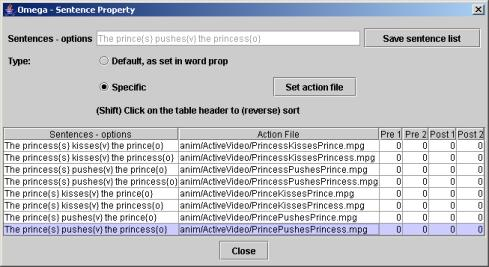
· Close the Sentences – options dialogue, save the lesson, test run from within the Lesson Editor (make corrections, if necessary) and then in lesson mode in the main program.
You can record your ownsound via a microphone connected to the mic input of the computer. You can use the standard ”Sound Recorder” utility in Windows. It is generally found in the Utilities – Entertainment folder in the Start menu. If not, you could find it under the name of sndrec32.exe in the ”system32” folder within the WINNT or Windows directory. This utility will only supply you with very basic editing facilities, like trimming the start and end of the sound recording.
For better recording and sound editing features we can recommend the use of the free Audacity program (see http://audacity.sourceforge.net), or the sound editor utility of the Nero CD/DVD package, or any of several other sound editing products in the market (such as GoldWave, SoundForge etc.).
NOTE! The quality of sound recorded directly into computers is very varying. It’s a good idea to team up with somebody with basic knowledge of sound technology to achieve higher quality. It’s often better to record sounds on an external recording device and then transfer it to the computer - re-recording via the Line-in connector, or by direct transfer of ready sound files in a suitable way.
Sound files should be stored in the wav or mp3 format, and should be placed in the ”media/audio/words-en” (etc) folder for recorded words/phrases for the lessons, alternatively in the ”media/audio” folder for effect sounds for the animations.
In general we recommend the technical quality of 44 100 kHz; 16 bits; mono or stereo, for the digital sound files.
The lesson menus of Omega-is are dynamically displaying the content of the ”active” folder of the ”lesson-xx” folder, where ”xx” represents the language; ”en” for English, ”sv” for Swedish, ”nb” for Norwegian (bokmål), etc.
To make a new lesson available in the lesson menu; browse to the sub folder of the “active” folder where the new lesson fits, and create a folder with a suitable name. In this you place the xxx.omega_lesson file. To represent the lesson by an image in its button, one or two image files called “image.png” and “image_enter.png” should also be placed in the lesson folder. (The image with the name ending with ”_enter” is the one displayed when the button is in focus).
The structure for all this is depicted above in chapter D, ” The ”lesson-en” folder - English lessons” section, page 27. Graphics used for “image” and “image_enter” files can be found in the ”LessonUI-Graphics” folder, within the ”media” folder.
The Lesson Editor supports several additional sophisticated functions for dynamic referencing from the student’s choices in the lesson to the corresponding animation files and actors within these. Moreover, there are functions for the transfer of information between a series of lessons – and choices made within these – which makes it possible to construct stories.
These functions can be somewhat complicated to explain and absorb. A rather short presentation will follow here. In addition, interested lesson authors are advised to study, learn from and re-use content and functionality in existing lessons and stories.
In a lesson, up to three variables (1, 2 and 3) can be set in the property dialogue for each word in the item buttons. These variables can be referenced from the fields for ’Text’, ’Sound’ and/or ’Action file’ in the properties for words in other item columns – or from the property dialogue for the target slots in the Sentence Line – of that lesson. Let’s call this ”internal” variable references. (Variables can also be referenced between the different parts of stories – ”external” variable references).
The format for internal variable references is {+1} for variable 1 in the next item column (to the right), {++3} for var. 3 in the second next, {-2} for var. 2 in the previous column (to the left) etc.
Many examples of the use of internal variable
references can be found in the H3-H5 and J lessons.
For more
details on external variable references in stories – see the
“Stories” section below.
Normally each sentence in a lesson links to one
single animation file. But it is actually possible to link to more
than one animation, i.e. to play two (or more) animated scenes in a
row, as an illustration of a sentence.
This can be accomplished
in a couple of ways: One is to let two action words link to one
animation each, as in the example ”Demo-LinkedAnim”
lesson, found in the Lesson menu in the X-Demo–Xercises, in the
”lesson-en\active\X-Demo\Xercises” folder.
Another
way is to reference several comma separated animation files in the
action word properties (see the L3-8 story lesson in the L3 folder,
under ”lesson-en\ActiveStories”). NOTE! The corresponding
may also be needed for Actor and Path IDs.
When a story is constructed, there is a need of functions to retain the memory of previous choices of actors, environment etc., so that the story line can be maintained. In Omega-is this is achieved by the use of ”external” variables. In this way the information is transferred between the parts of the story. We’ll look at a few examples found in the accompanying L1 and L3 stories:
The first part of the L1 story – lesson ”L1-1” – is found in the ”lesson-en\active\L-Stories\L1” folder.
Let’s look at the following item properties for one of the two alternative main actors of the story – ”the dinosaur with the red scarf” (the other one is ”the dog with the yellow hat”):
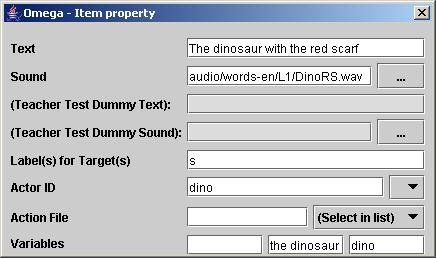
Note the Actor ID (”dino”) and the two Variables ”the dinosaur” (var-2) and ”dino” (var-3)!
This lesson has got its ”Lesson name” set to ”L1-1”, and has been marked as ”First in story”.
With this in mind, we find our way to the ”L1-5” part further on in the story sequence. It is found in the ”C:\omega\lesson-sv\ActiveStories\L1” folder. There we take a look at the item properties for the phrase ”- said the dinosaur”:
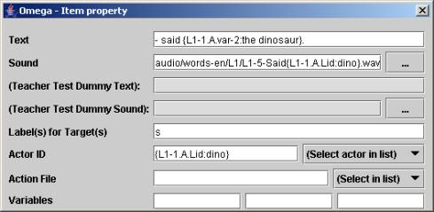
The content in ”Text” is ”- said {L1-1.A.var-2:the dinosaur}.”
This means that variable 2 (”var-2”) for the actor at Path ID ”A” in ”L1-1” is called. If this variable content is not available, the value after the colon sign will be used i.e. ”the dinosaur”. The parts of the variable reference are separated by full stops/periods, and are all contained between curly brackets.
If ”the dog with the yellow hat” is selected in L1-1, the value of ”L1-1.A.var-2” will be ”the dog”. The text shown in the text button will then come out as (instead of the cryptic variable reference) : ”- said the dog”.
Also take a look at the variable reference in ”Actor ID”: There the Actor ID – called ”Lid” – of the actor at Path ID ”A” in lesson ”L1-1 is called”. Default is ”dino” (after the colon), but it would in our example above have been ”dog” that is the Actor ID of the dog.
The ”Lid” variable is also used for ”Sound” to play the sound file that matches the text representation of the actor that has been chosen in the story.
It is obvious that it’s a bit of high level programming to set up all variables and references to make a story run as intended. It may become rather complex, especially in a more elaborate story than this one. The interested story designer may dive into the variable referencing of the L3 story to get a closer look.
There we can find
references like:
”anim/Stories/L3/L3-5{L3-4.W4.var-3:meadow}” –
which means a call to the animation file named “L3-5…”
– with the addition of variable 3 (var-3) of the selected
item in word column 4 (W4) in lesson L3-4, and that the default
addition is ”meadow” ( i.e. ”L3-5meadow”).
Note that these lesson variables may also be referenced and used in animations – see Chapter F below!
Here is a list of the commands and functions of the Omega-is Lesson Editor:
File:
New – opens a new lesson template file
 Open
– displays the Open file dialogue –
for the opening of an existing lesson
Open
– displays the Open file dialogue –
for the opening of an existing lesson
 Save
– saves the current lesson file under the
current name
Save
– saves the current lesson file under the
current name
 Save
as – displays the Save
file dialogue – allowing the entering of a files name
Save
as – displays the Save
file dialogue – allowing the entering of a files name
Exit – exits the Lesson Editor – via a control question.
Help:
- Manual – displays chapters D, E and F of this manual in the default browser
- About Omega – shows information about Omega-is in the default browser
- About Lesson Editor – as above
Buttons / functions of the Tool bar:
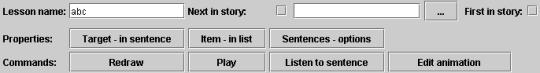
Story functions:
- Lesson name – option to name the lesson – used for referencing between part lessons of stories
- Next in story: – used for linking to the next lesson file of a story sequence. The check box is ticked, and the next lesson file is found via the Browse button ”…”
-
First in story:
– the check box is ticked if the current
lesson file is the first in a story sequence. Such a first story
lesson file must be placed in its own folder under L_Stories in
the ”active” folder – under ”lesson-xx”.
The other files of a story should be collected in a common folder
in the ”ActiveStories” folder.
Properties buttons:
- Target – in sentence – opens the properties dialogue for the target slots in the Sentence Line – can also be opened by right clicking a box in the Sentence Line.
- Item – in list – opens the properties dialogue for the words/phrases in the item columns – can also be opened by right clicking an item button in the columns.
- Sentences – options – opens the window for sentence properties, i.e. the list of the possible sentences/combinations that can be created from the words/phrases in the lesson – with the option to link sentences to video clips, and to select specific sentences for specially prepared pre- and post-tests in Teacher Mode.
Command buttons:
- Redraw – redraws the window – may sometimes be needed after the addition or deletion of Item columns or Target boxes – for a proper display etc.
- Play – plays/runs the animation that represents the current sentence created in the Sentence Line. (Requires that a complete sentence has been created of course.)
- Listen to sentence – plays the sound files representing the words/phrases in the current sentence in the Sentence Line.
- Edit animation – opens the Animation Editor with the animation linked by the ‘action word’ of the current sentence (possibly influenced by references in other words).
The lesson area:
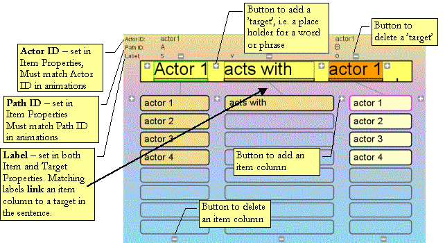
Plus- and Minus- 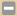 buttons by the Sentence Line and item columns (see above) add or delete ’target’ or ‘item column’, respectively – after a control question. NOTE - maximum 6 word/phrase targets in the Sentence Line!
Property dialogues:
Target – in sentence:
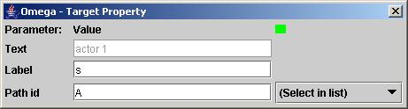
- Text – displays current selection for the target (if any) – no text entry!
- Label for Target – should be set to match the item column that should be linked.
- Path ID – Selected from the available for desired role in current animation(s). NOTE! May refer to a variable in another item column for choice of Path ID (e.g. lesson H4).
Item – in column:

- Text
– the word or phrase to be displayed and
selected for inclusion in the sentence.
NOTE! The item may contain references to variables in
other item columns that modifies what is displayed and sent to the
Sentence Line.
- Sound
– the sound file that matches the
text.
NOTE! The file reference
may contain variables from other item columns that modifies the
reference – see below under ”Variables”.
- (Teacher Test Dummy Text): – optional dummy word (distraction word) for post tests in teacher mode.
- (Teacher Test Dummy Sound): – sound file matching the dummy word.
- (Label(s)
for Target(s) – here
a label is entered to match the ”target” in the sentence
that should receive the selected word/phrase.
NOTE! The label represents the whole item column - needs
only to be entered once.
NOTE! Two labels may be entered –
separated by commas – to link an item column to two different
targets in the Sentence Line – as in lessons F3, F9 etc. where
the nouns can be both the subject and the object in the
sentence.
NOTE!
Several item columns may have the same label, so that they enter
words to the same target in the Sentence Line – as in the
1-word lessons B3 and B4.
- Actor
ID – selected to match
”actor” items to the corresponding aktor in cast of the
animation that has been linked via the “action” word
(including optional variables from other words). Valid actors are
found under ”(Select actor in list)” – provided a
sentence has been created in the Sentence Line, so that an animation
is referred.
NOTE! Actor IDs are not
needed for words that should not refer to any actor in the animation,
such as ”action” words (generally verbs) and words with
other functions.
- Action
File – for action words
(typically verbs), here the animation file should be referenced that
represents the implied event of the action word (plus optional
variables).
NOTE! The file reference may contain variables
from other item columns that modifies the actual reference –
see below under ”Variables”.
-
Variables – Up to three
variables (1, 2 and 3) can be entered for each item. These may then
be referenced from the fields for Text, Sound and/or Action File in
the properties for items in other columns in the lesson (”internal”
variable references), or from other lessons/parts in stories
(”external” variable references).
The format for referencing variables internally is; {+1} for
variable 1 from the next item column (to the right), {++3} for var. 3
in the 2:nd next, {-2} for var. 2 in the previous column (to
the left) etc.
For
more details, and about external variable references in stories –
see the previous section above about ”Advanced –
variables, stories etc.”.
Sentences – options:
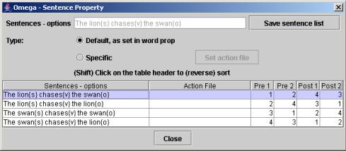
This dialogue displays a list of all the sentences that can be created from the available words or phrases in the lesson – for overview and documentation, for optional linking to video clips, and for special selections for tests in Teacher Mode.
Save sentence list – saves the list to a text file, for documentation and printing from a text editor application.
Default, as set in word prop – the default setting, meaning that the sentence will be represented by an Omega-is animation, as set in the properties of the lesson material.
Specific – Set action file – means that the selected sentence will be directly linked to, and represented by, a short mpg or mov video film.
The numbers in the list under Pre 1 and 2, Post 1 and 2 – control which sentences will be presented in Pre- and Post-tests in Teacher Mode, and in which order.
|
Chapter F |
|
|
The Animation Editor is a tool allowing the creation of new Omega-is animations, which can then be linked to the language material in the Lesson Editor.
The Animation Editor also makes it possible to edit existing lessons. An alternative image may be used, or the speed of some of the actors in the animation may be adjusted. You may want to use an alternative background in a specific lesson. Perhaps the use of a photo of the student’s school yard might be more motivating.
NOTE! The Animation Editor keeps track of changes made in an animation! If they haven’tbeen saved, this is stated in the ”title bar” of the window, and a warning is given when the commands ”Exit”, ”Open” or ”New” are selected..
First a look at the Animation Editor window and its parts:
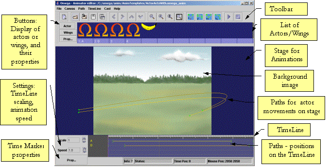
The Animation Editor is an application
on its own that may be opened, either by selecting ”Edit
animation” from within the Lesson Editor (see the previous two
chapters), or by selecting the Animation Editor from the Start
menu.
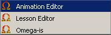
Minor changes in, or additions to, existing animations is a good way to get going with using the Animation Editor.
· Start the Lesson Editor.
- Open the lesson file ”HeadlessHunt.omega_lesson” that is used in the ”Xercise-Demo2” lesson in the” Xercises” folder in the ”X-Demo” lessons. We will add two new swappable heads to this wild hunt animation.
- Click on some words to create a complete sentence in the Sentence Line.
- Then click on the ”Edit Animation” button – the Animation Editor will open with the” HeadHunters.omega_anim” animation (– in the /anim/MyAnim folder).
· Maximise the window. In the actors list you will find two headless actors, plus four heads (belonging to the initiators of this program) – see below. We will now add two more disputable figures to the list. Right click on the first empty slot in the Actors list (or left click on the slot, and then on the ”Prop...” button).
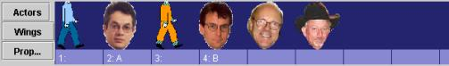
·
An empty Actor Properties dialogue is displayed – click
on the ”Set” button to link up to a new actor image. Open
the ”actor”, and then ”MyActors” folders, and
select the ”bush.png” file.
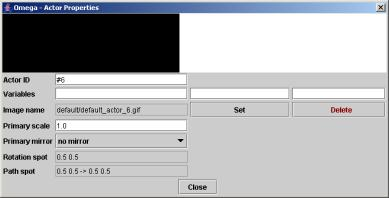
· Repeat the procedure for the next actor slot, and select the ”saddam.png” file. The actors list (cast) should now look as follows:
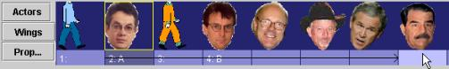
Grab the label ”2:A” (with the mouse) and drag it to the Saddam head, as shown above. Likewise drag the ”4:B” label to the Bush head.
· Close the
Actor Properties dialogue to get a free view. Now test run the
animation with the two new actors: Click on the Play button!
The
result shows we’re getting there, but that some adjustments are
needed. Bush’s and Saddam’s heads are slightly displaced
in the animation, and possibly big (but this may be regarded as a
good point …).
· Re-open the Actor Properties dialogue by right clicking on one of the heads, e.g. the first one. The properties for the actor with the Actor ID ”Head1” are displayed (below left). Then click on the Bush head/actor and compare:
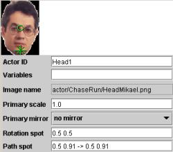 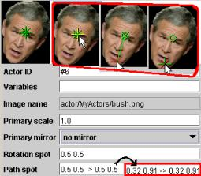
As shown there are three green markers in each image – a circle, a cross and an X. The circle represents a ”Rotation point”, currently of minor interest. The cross and the X represent so called ”Path Points”, i.e. points at which the actor is attached to its path in the animation – at the start and the end. In ”Head1” these path points are both placed at the actor’s chin. In the Bush head all three markers are in the middle of the forehead. Now move the ”path points” (cross and X) according to the extra images in the red frame above. When you point the mouse at the markers, one is highlighted in yellow. If it’s not the desired marker, then move the mouse cursor away and back again – then the next marker is highlighted. Use the mouse to grab and drag the highlighted cross marker to the chin area, as shown in the image above. Repeat this for the X marker. The numeric values for the path points will change accordingly, to end up at the approximate values to the ones in the image above. Repeat the whole procedure for the Saddam actor!
· Test run the animation again. Satisfied? You could possibly try changing the ”Primary scale” (size) of the new heads, e.g.. to the value of 0.8. NOTE that decimal points – not decimal comma – must be used for all parameters in the Animation Editor!
· Finish the editing of this animation by replacing the anonymous #6 and #7 Actor ID values by suitable references of your choice – e.g. ”Bush” and ”Saddam”, or ”Head5” and ”Head6”. Save the animation, and close the Animation Editor.
· You will now be back in the Lesson Editor, and you may add the words ”Bush” and ”Saddam” – with references to the new actors in the animation. (See the previous chapter for details about how to do this – matching sound files will be found in the ”extra” folder.).
A certain animation may be perceived as being too short/fast – or too long/slow – for a certain student. This may motivate an adjustment of the length of particular animations. This is how to do it:
· Start the Lesson Editor, open the lesson file ”demo.omega_lesson” in the ”X-Demo” lessons in the ” Xercises/Xercise-Demo1” directory. Create a sentence containing the word ”chases”. Then select ”Edit animation”. The Animation Editor with the ChaseChased.omega_anim will appear, approximately as below:
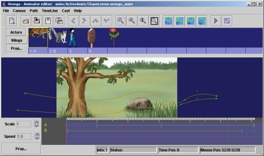
· At the bottom of the window is the ”TimeLine” where the animation paths are represented. In this animation these are covering a time span of about 6 seconds. We will now compress the action time to about 4 seconds. First test run the animation (in a maximised window) to get a feeling for the original speed/length. Now test to shorten the length on the TimeLine of the up most path; Grab, by Ctrl + mouse click and hold, the end marker of the path (”]”), and drag it to approximately 4,1 seconds position, as shown below.
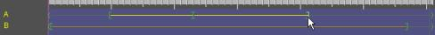
· Then
repeat the procedure for the lower path (to around 3,9 sec), and
finally shorten the whole animation time by Ctrl-dragging one
of (and thereby all) the end markers ”>” to an
approximate 4,2 sec position, as below.
(NOTE! A minor bug makes the end marker jump to the right around
0,8 sec by the Ctrl-mouse click. Disregard this, and the resulting
deviation between the mouse pointer and the end marker, and drag the
end markers to the desired position as in the figure below.)
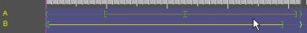
· Test run the animation again. Was the result to the better or worse? Save the animation if the result of the change is regarded positive. Otherwise, feel free to continue to play around with the length of the paths etc, and test the results. Then close the Animation Editor – after saving, if desired.
We will continue with the same Xercise-Demo1 lesson as in the previous exercise.
· Now create a sentence containing the phrase ”jumps over”. Click on the ”Edit animation” button. The Animation Editor will appear, as below, with the ”JumpOver.omega.anim” animation (in the /anim/MyAnim folder):
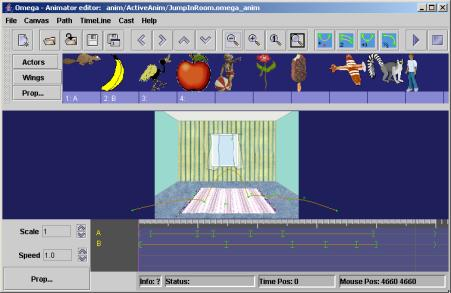
· We will now change the background of this animation. Open the ” Canvas” menu and select ”Set background”. Open the ”background” folder and select the ”schoolyard1.jpg” image. This could of course just as well, or even better, be a photo of the local school yard or classroom.
· The scene will now look something like the image in the next section below. We will there do some necessary adjustments of the positions and form of the animation paths.
The image below shows the result of the change of background image in the previous exercise. A test run of the animation (in a maximised window) will show that the animation paths are now positioned a bit too far up in relation to the new background. We’ll now move the two paths slightly downwards on the stage.
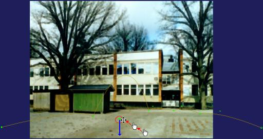
· Move the mouse pointer, as shown in the above image, towards the encircled group of green points in the jumped-over actor’s contracted path. As shown, the form of the mouse pointer changes when it comes close to the path points – from a hand to a positioning cursor.
· Press and hold the Shift key, and (click-)drag this whole path, and its path points, downwards with the mouse – as the blue arrow indicates.
· Make a corresponding repositioning of the stretched and multi section path of the jumping actor – by Shift-dragging one of the points of the path downwards in relation to the background – about as far as in the previous operation.
· Now test run the animation to see the result. (Unfortunately it may be somewhat difficult to see the bottom part of the animation as the scene is partly obscured by the tools of the Animation Editor. You will have the full overview of the results when the animation has been saved and run from within a lesson – see below.) Do further adjustments of the positions of the paths, as needed, save the animation and close the Animation Editor.
Back again in the Lesson Editor:
· Now the “Xercise-Demo1” lesson can be test run with the two newly modified animations. If something is unsatisfactory, just use the ”Edit animation” button to return to one or both of the two linked animations for further editing in the Animation Editor – as in the following section below …
We’ll stick to the Xercise-Demo1 lesson, and return to the ”jumps over” animation for some additional alterations of the path of the jumping actors.
· Create a sentence with ”jumps over”, and select ”Edit animation”. We start by increasing the height of the jump over the static actor:
· The scene of the animation should, After our previous alterations, look something like the image below. Move the mouse pointer up over the path to find the small green x-shaped point representing the ”curve handle” that determines the curve of the jump. The mouse cursor changes from a hand to a ”positioner” when it approaches the handle (the lower position in the red encircled area of the image.) When you click on the x-shaped handle point it is selected and coloured red.
· Now grab the handle (with the mouse) and drag it upwards – as the purple arrow indicates. The bow of the jump will adjust accordingly, as the image shows. Test run and adjust further until the result is satisfactory.
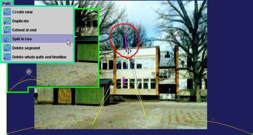
We’ll now make the appearance of the jumping actor a little ”jumpier” by adding a few extra bows to the path:
· Start by clicking-selecting the starting point of the path – the filled small square bottom left dot – so it becomes red coloured (as in the inserted part of the image above).
· Open the ”Path” menu and select ”Split in two” (cyan framed insertion in the above image). The first segment of the path will now be split into two segments. Repeat the procedure for the first new segment. We will now have three segments before the jump.
· Now bend the three segments by dragging their x-shaped curve handles – as indicated in the above image. Test run, adjust if needed, and save.
There are of course many other things to discover, investigate and tweak in this “jumping-over-animation”. For example, take a look at the properties for the different markers, or ”trigger points”, along the two paths on the TimeLine.
· Open the marker properties dialogue by clicking on the ”Prop…” button at the bottom left of the TimeLine (or right click on one of the paths on the TimeLine and select ”Marker properties”).
· Then click on (select) the different markers, and study their properties, to see what’s going on in each point. We will not now further study the different functions and how they can be utilised. We will return to this in the following sections. But a quick look at the features and properties of this animation gives some insight in some of the possibilities – to play sound effects, to scale (change the size of) actors, to flip ”layers” (in front - in between – behind ...), to rotate actors etc.
We will now go through the creation process for a brand new Omega-is animation: We choose to let the stage present a space scene – with a moon and a comet. All necessary media material is included in the installation:
· Quit Omega-is or the Lesson Editor, if any of them is running
· Start the Animation Editor from the ”Animation Editor” start icon
· Maximise the window to full screen
· It is a good idea to start by saving the anonymous new animation under a suitable name. Select File – Save (or Save as – no difference at this stage). Save the animation in the ”anim\MyAnim” folder e.g. under the name ”MyMoonComet”.
· In the ”Canvas” menu, select – ”Select background”. The Open file dialogue will open, displaying the content of the ”media” folder.
· Open the ”background” folder. Find and open the ”comet.jpg” file.
Save the animation again after this step, and then again after each further major addition or change!
We have now set the stage for our space animation. We will now soon let some actors enter and perform on it. But first:
To provide an illusion of depth in the scene, it would be fine to be able to make the actors move both behind and in front of the moon and the comet. We achieve this by placing two wings in front of the moon and comet in the background image – copies of these two objects.
· Click on the ”Wings” button, to the left of the Actors/Wings list.
· Right click on the first empty slot in the wings list – or click on the ”Prop…” button – so that the ”Wings – Properties” dialogue is opened – see the image below.
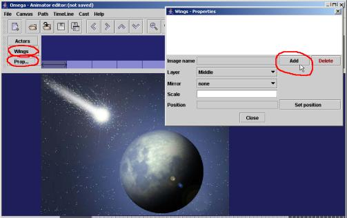
· Now click on the ”Add” button to select a wing image file. We will find ourselves in the Open file dialogue again, which displays the content of the ”background” folder as that’s where we were last looking. Step back / up in the directory tree to the ”media” folder, and then into the ”Wings” folder. Select the image file ”comet.png” (see the image to the right)
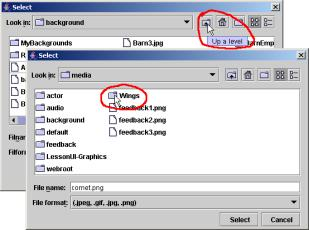
As shown in the image below, a copy of a part of the comet appears within a red frame. While the frame is red you can grab the wing with the mouse and drag it to a desired position on the stage/background – in this case this is on top of the comet in the background, so that it invisibly blends into the background image. NOTE; you can only move the wing once at a time. As soon as you drop it in a new position the frame goes yellow and the wing is immobile. To make it moveable again you have to click on the ”Set position” button in the ”Wings – Properties” dialogue.
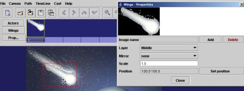
· Then click on the list button for ”Layer” and select ”Middle” – see images above and below.
· (In ”Wings – Properties” dialogue, as you can see, you also have the possibility to change the scale/size of the wing/prop, and also to mirror it horizontally or vertically. But this is of no interest to us in this case.)
· Click on the next empty slot for a wing/prop (to the right of the comet). The ”Wings – Properties” dialogue will show up empty. Fill it with new content by repeating the procedure described above – click on ”Add” (we’re now already in the right folder) and select the wing/prop ”BlueMoon.png” – place it on top of its original – change Layer from ”Top” to ”Middle”. The screen should look something like below:
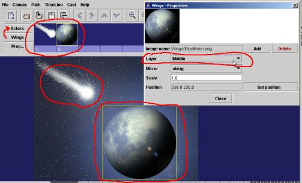
· Finish by closing the ”Wings – Properties”, and return to the display of the actors list by clicking on the ”Actors” button (red arrow in the above image).
Now it’s time to enter actor paths into the space scene:
1. Add another actor path by selecting ”Path” – ”Create new” from the menu, or by clicking on the corresponding symbol in the toolbar (see image below). The new path appears in the upper part of the stage, and with another representation down on the TimeLine.
2. Press and hold the Shift key and use the mouse to grab the starting point of the path (on the stage – the left filled tiny square) and drag it – and the whole path – downwards to position 2. (approximately) in the below image.
3. Then use the mouse (NOTE; now without Shift!) to grab the end point of the path (the right un-filled tiny square) and drag it to somewhere around position 3. in the below image.
4. Finally, for this path, use the mouse to grab the ”curve handle” (the small x) and adjust the curve of the path by dragging it to a position close to position 4. in the image below.
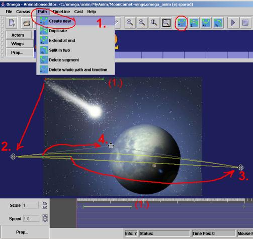
· Now add another actor path by repeating the process above, so that the result looks something like the image below.
· Test run the animation. The result may not be too impressive: Two of the Omega actors quickly sail by across the stage behind/beyond moon. We’ll shortly try to improve the animation with new actors and other adjustments.
We continue with selecting some more suitable actors for our scene:
· Right click on the first slot in the actors list (or left click on the slot and then on the ”Prop...” button). We’ll replace the Omega actor with a rocket ship.
· Click
on the ”Set” button, and then browse to the
”(media\)actor\Things” folder and in that select the
”rocket(.png)” image.
NOTE that there are
additionally four images named ”rocket-01”, ”rocket-02”,
”rocket-00”, and ”rocket-NoAnim! The number
suffixes mean that the rocket actor will have an ”internal”
animation. This is achieved as the program will flip between the
images with the -01, -02, and so on until -00 with a default speed of
0.2 seconds per image. More about this below.
It’s time to enter a suitable ”Actor ID” for
the actor – e.g. ”rocket”. Further possible
adjustments of the Actor Properties can wait.
· Now
click on slot number 2 in the actors list, and replace, as before,
this Omega actor with the ”potato.png” actor (from the
same folder - ”(media\)actor\Things”).
Give this actor too a suitable ID, and set its ”Primary
scale” to ”0.4 ”.
· Close the ”Omega – Actor Properties” and test run.
Now it’s time to do some adjustments of how the animation is performed in terms of timing, and of how the actors relate to each other, and to the wings/props and the background:
· The animation is very short and quick. We’ll start by prolonging the time span.
1. Press and hold the Ctrl key, and use the mouse to grab and drag the right end of the grey marking (and the right angle markers) – from the 5-seconds position to the 7-seconds position according to 1 in the image below.
2. Ctrl-drag the right end markers of the two paths on the TimeLine, so that they are lengthened as shown at 2 in the image below.
3. Now press and hold the Shift key, and drag the whole upper/first path to the right – i.e. later – on the TimeLine, as in the image below. Test run!
Both the actors are now moving somewhat slower – the potato/asteroid slightly ahead of the space ship. Now we’ll further fine tune the behaviour by adding events and properties for the actors on the TimeLine. (Save the animation!)
· First some basic adjustments of the Rocket’s behaviour:
1. Open the ”Marker Properties” dialogue – click on the ”Prop…” button to the left of the TimeLine (or right click on one of the markers/paths on the TimeLine and select ”Marker properties” from the pop-up menu).
2. Now click on the start marker (the little green left angle ”<”) for the first/upper path on the TimeLine. The properties for that specific marker are displayed.
3. First give this path a ”Path ID”, by entering an ”A” in the Path ID field at the top of the dialogue (see the image to the right).
4.
We’ll now make the rocket fly in front of, on the near side of,
the moon:
Click on the list box at the ”set Layer”
label, and select ”Front”.
Also
click/check the little check box to the right of this property –
as in the image to the right.
· We’ll now do the corresponding adjustments for the other path – that of the potato:
1. Click on the ”Prop…” button to the left of the TimeLine, and then on the start marker of the second/bottom path, so that its properties are displayed.
2. Set a ”Path ID” also for this path, for example ”B”.
3. We’ll now make the actor of this path rotate. This is accomplished by entering the ’argument’ ”380” (degrees per sec.) for the rotation speed in the field next to ”Rotate object” – and by activating the function by checking the ”is On” checkbox.
4. We’ll also make our actor gradually become smaller by entering the argument ”-0.2 0.2” in the field next to “Scale object”. NOTE the Space between the two decimal numbers! This means that the object will become smaller (in relation to its primary scale/size) with a factor of –0.2 (a negative value will scale down, and a positive value will scale up), and down to a final scale of 0.2 of the primary scale/size.
5. Lastly we’ll start the playing of an effect sound by clicking on ”Set…” button next to the ”Play sound” property. We’ll browse in the ”media\audio” folder to find the sound file called ”SpaceSounds.wav(mp3)”. Check the ”is On” check box! The result should look like the image below. Test run and save!
· We’ll now add a few new trigger markers in path A – to see how ”Image Attributes” are working:
1. Right click on path A (on the TimeLine) somewhere around the 3-seconds position – select ”Add trigger” in the pop-up menu – a new marker will appear in path A.. Make sure that the Marker properties dialogue is displayed, and click on the new marker to display its properties.
2. Enter the text ”NoAnim” in the field next to ”set Image Attribute”, and check the ”is On” check box . This means that the ”rocket.png” image (with its internal animation) will here be swopped to ”rocket-NoAnim.png”, resulting in the rocket engine looking like it’s been shut off in the animation.
3. In the same manner, add another trigger marker to path A – around the 4.5 seconds position – and check the ”is On” check box next to the “set Image Attibute” property – NOTE; without entering any attribute text. In this way the Image Attribute is re-set to zero, and the animation of the rocket/engine starts again.
· We’ll round off by adding another type of event and marker to path A, a so called ”timesync”. This one will be represented by a marker on both the TimeLine and Stage representations of the path. It is used to control how the time span is distributed over the path on the Stage.
1. Right click on path A (on the TimeLine) at around the 4.8 seconds
position – slightly to the right of the newly added trigger
event marker.
Select ”Add timesync”
from the right click pop-up menu.
Two violet
markers appear – one roof shaped on path A on the TimeLine, and
one tiny square one on path A on the Stage (see the image below).
2. Ctrl-drag the
square marker slightly to the left towards the edge of the moon –
as indicated by the red arrow in the image below.
Test
run: The effect should be that the rocket moves towards the moon at a
slower speed, and then speeds up when the rocket engines are ignited.
· Save the animation again, and feel free to continue adding new actors and/or paths and properties/events. An available and suitable alternative or complement to the rocket ship (”rocket.png”), is for example the ”FlyingSaucer.png”.
· A somewhat extended version of the animation we’ve created can be found in the ”PassiveAnim” folder under the name ”MoonCometX.omega_anim”. Take a look and play around with it, and compare with the result of our above exercise.
In addition to the presented functions, the Animation Editor supports a number of options that we haven’t had the opportunity to utilise in the above examples. Please see the list of functions and commands below for information about these. But before that we wrap up with some words about internal animation of actors, the possibilities offered by using variables in the animations, and some tips and tricks.
As mentioned above (in ”Adding and adjusting new actors”) internal animation – i.e. the movements of the actor itself, e.g. a ”walking” motion – is accomplished by the program automatically flipping through images with the same name, but with the extension -01, -02, etc. up to -00, and with a default speed of 0.2 seconds per image. This has the following consequences:
· If you link to an actor image in a folder where there are more images with the same name plus additional -01, …, -00, then the actor will automatically be presented with an internal animation based on this series of images.
· The series must always begin with ”imagename-01.png”, and ended by ” imagename-00.png”. The more images in the series, the more detailed or complex internal animation can be performed. The speed of the internal animation is by default 0.2 seconds per image (5 images per second), but this may of course be adjusted in the Marker Properties for the actor’s TimeLine.
· If you
want to avoid an internal animation you must refer to an actor with
an image name that is not part of a numbered animation series, or by
calling an attribute (of an animated image) that lacks an animated
series – an example:
In the C:\omega\media\actor\FeedEat folder we find many image
series, including …
Tiger.png, Tiger-01.png,
Tiger-02.png, Tiger-00.png
Tiger-Eating.png, Tiger-Eating-01.png,…,
Tiger-Eating-04.png, Tiger-Eating-00.png
Tiger-Wait.png,
Tiger-Wait-01.png, Tiger-Wait-00.png
Tiger-Still.png
This means that by using the actor
”Tiger.png” we will have an internal animation based on 3
images, calling the attribute ”Eating” will give an
animation based on a 5 series, with the attribute ”Wait”
an animation of 2 images, but the attribute ”Still” will
present a tiger without internal animation.
Variables can be used in animations (as in lessons) to establish more advanced relations and links between actors and their paths, effect sounds and attributes, and to choices made in the lessons. The easiest way to illustrate this is to look at a couple of examples from animations in the Omega-is resources:
· The simplified ”invisible” variable for effect sounds:
- Open the ”ChaseChased1.omega_anim”
animation.
This animation, like many others,
shows a simplified way to call effect sound files using the current
actors ID as a variable.
- Open the Marker Properties dialogue for the first added Trigger marker (after the start marker, Ordinal=2), on path A on the TimeLine. There, the rather anonymous sound file ”audio/sound.wav” (or sound.mp3) is referenced in the Play Sound argument. This means that a sound file with the name ”sound-” plus the actor ID of the used actor will be played (if it exists) – e.g. ”sound-lion” with the lion actor. In this fairly simple way, relevant effect sounds may be linked up to actors used in the animations at each specific occasion.
· Explicit variables for effect sounds:
- Open the
”StopsInRelationTo1.omega_anim” animation.
In the Actor Properties we can see that the three first actors
have one variable each – ”carStop”,
”mcStop” and ”busStop” respectively.
- Open the Marker Properties dialogue
for the start marker (Ordinal=1), on path A on the TimeLine.
There, at Play Sound, a sound file called ”
audio/${A:1}.wav” (or .mp3) is referenced.
This means that a
sound named as variable 1 for the current actor on path A will be
played. Explicitly, this means that the name of the sound file here
could be ”audio/carStop.wav(mp3)”,
”audio/mcStop.wav(mp3)”, or ”audio/busStop.wav(mp3)”.
- The corresponding goes for the sounds played at path B.
· Variables in image attributes:
- Open the ”KickToPerson.omega_anim”
animation.
Among the actors there is a ball
and a bunch of balloons.
As seen in the Actor Properties, each actor is represented by the
images ”\actor\KickThrow\BallSoc.png” and
”\actor\KickThrow\balloon.png”.
There we can also see
that these actors each has a variable – ”Ball” and
”Balloons” respectively.
- Now, open the Marker Properties
dialogue for the last trigger marker (before the end marker –
Ordinal=4), on path C on the TimeLine. There an image attribute is
used called ”Catch${B:1}”. Explicitly this means that the
attribute will be ”Catch” + the value of variable 1 for
the actor on path B, i.e. ”Ball” or ”Balloons”
according to above.
So the image attribute will
either be ”CatchBall” or ”CatchBalloons”,
which matches the image files
”actor\KickThrow\BlondGirl3-CatchBall.png” and
”…\BlondGirl3-CatchBalloons.png”.
· Links between variables in lessons and animations:
- Open the Lesson Editor, and then the
lesson:
”…\lesson-en\active\J_Long_Sentences\J2\
J2.omega_lesson”.
- Create the sentence ”The fast
lemur chases the scared mouse across the meadow”.
As seen in
the information above the sentence line, the word ”mouse”
links up to an actor with the Actor ID ”mouse:scared” on
a path with Path ID ”B” in the animation called (via
properties of the word ”chases” – including two
variables).
- Now, click on ”Edit animation”. The Animation Editor is opened with the ”ChaseFastOverMeadow.omega_anim” animation.
- Open the Actor Properties e.g. for the scared mouse (3:d from the end). There you will find the Actor ID ”mouse:scared”, and this actor has also been equipped with the variable ”Scared”. This is used to play a suitable sound in path B on the TimeLine – see the Marker Properties for the first (”<”) marker (Ordinal=0).
- In this way the variable ”scared” of the word ”scared” in the lesson has been linked on to the variable ”Scared” in the animation, and there further on to a matching sound effect.
- From version 1.2 it is also possible from Marker Properties to refer directly to a variable of a word on a specific sentence label selected in the calling lesson; e.g. in Marker Properties - for Image Attribute or Sound file - type "${@S:2}" to pick up variable 2 from the word selected for label 'S' in the lesson/sentence that called the animation.
· Backup copies – prev and prevprev files: These backup copies are created each time an animation is edited and saved to disk. If a mistake is done, you can always revert to an earlier version by re-naming a ”animation.prev” file to ”animation.omega_anim”. Now and then it is a good idea to trash prev and prevprev file garbage in the animation file folders.
· If two actors need to be animated on closely aligned paths, it is a good idea to do as follows:
- Create the path for one of the actors and refine it to contain all, or most of, the necessary details – both on stage and on the TimeLine.
- Then use the ”Duplicate” path command to create an exact copy of the first path, and then make the desired adjustments for the copy: E.g. move the whole path using Shift+drag (with the mouse) – both on stage and on the TimeLine – to achieve a desired relation between the actors in space and time during the animation.
·
Save your own newly created animation files in the
folder:
”anim\MyAnim”
and accompanying new media files in the corresponding media
folders:
”media\background\MyBackgrounds”
”media\Wings\MyWings”
”media\actor\MyActors” and
”media\audio\MyAudio”
In this way it will be
easier to keep track of which files that need to be included, and
where to put them, when your own new animations and lessons are
copied to other computers – and hopefully also to the Omega-is
web site repository at www.omega-is.com
to be shared with others.
Below is a list of functions and commands in the Omega-is Animation Editor:
File:
New – opens a new and empty animation file
 Open
– displays the open file dialogue - to
select and open an existing animation file
Open
– displays the open file dialogue - to
select and open an existing animation file
Reopen – opens the latest saved version of the current animation
 Save
– saves the currently open animation under
the current file name
Save
– saves the currently open animation under
the current file name
 Save
as – displays the save
file dialogue – to name and save the current animation
Save
as – displays the save
file dialogue – to name and save the current animation
Exit – quits the Animation Editor – after a control question and confirmation
Canvas:
Set background displays the open file dialogue - to open an existing background image
 Left
– moves the whole stage, background and all,
to the left on the screen
Left
– moves the whole stage, background and all,
to the left on the screen
Right – moves the whole stage, background and all, to the right on the screen
Up – moves the whole stage, background and all, upwards on the screen
 Down
– moves the whole stage, background and all,
downwards on the screen
Down
– moves the whole stage, background and all,
downwards on the screen
NOTE – the above movement commands may be handled by mouse drag & drop
Smaller – zooms out the background/stage by around 25%
 Bigger
– zooms in the background/stage by around
30%
Bigger
– zooms in the background/stage by around
30%
 1:1
– resets the size of the background/stage
to the default scale
1:1
– resets the size of the background/stage
to the default scale
 Fit
in window – zooms the
background/stage to fit the available screen size
Fit
in window – zooms the
background/stage to fit the available screen size
Path:
Create new – adds a new actor path – on the stage and the timeline (up to 4 paths)
Duplicate – adds a coy of the currently selected path on the stage (incl. its timeline)
Extend at end – adds another segment at the end of the currently selected path
Split in two – splits the segment to the left of the selected path point into two parts (the segment to the right of the start point will also be selected and split)
 Delete
segment – deletes segment
t.t.l. of the selected path point (or t.t.r. of start point)
Delete
segment – deletes segment
t.t.l. of the selected path point (or t.t.r. of start point)
Delete whole path and timeline – does exactly so – after a control and confirmation
TimeLine (animation):
 Play
(Skift-P) – runs/plays the
animation
Play
(Skift-P) – runs/plays the
animation
 Stop
(Skift-S) – stops the
playing
Stop
(Skift-S) – stops the
playing
Cast:
Set actor – displays the dialogue to open an image file for actors 1-4 in the actors list – corresponds to Image name – Set in the Actor Properties dialogue – see below
Add a wing – displays the dialogue to open an image file for a wing/prop in the next free slot in the Wings list – corresponds to Image name – Set in the Wings Properties dialogue – see below
Show actor properties… (Ctrl-A) – displays the Actor Properties dialogue – corresponds to a mouse right click on a slot in the actors list, or a click on the ”Prop…” button to the left of the actors/wings list
Show wings properties… (Ctrl-W) – displays the Wings Properties dialogue – corresponds to a mouse right click on a slot in the wings list, or a click on the ”Prop…” button to the left of the actors/wings list
Flip actor/wings (Ctrl-F) – flips between the actors or wings list – corresponds to a mouse click on the ”Actors” or ”Wings” buttons t.t.l. of the actors/wings list
Help:
Show manual – opens the editing chapters of this manual in the default web browser
About Omega-is – displays an information panel about Omega-is
About Anim Editor– displays an information panel about the Animation Editor
Commands and functions at the TimeLine:
Scale
– changes the scale of the TimeLine. The
 button
extends the scale range, the
button
extends the scale range, the
 button
narrows it (zooms in – down to 0.2 of the default scale)
button
narrows it (zooms in – down to 0.2 of the default scale)
Speed
– changes the speed of the animation. The
 button
increases it – up to 2.0 times the default speed. The
button
increases it – up to 2.0 times the default speed. The
 button
decreases it – down to 0.5 of the default speed. NOTE! –
These changes are only temporary to test the animation behaviour at
different speeds (which may be set per user), and are not saved in
the animation file.
button
decreases it – down to 0.5 of the default speed. NOTE! –
These changes are only temporary to test the animation behaviour at
different speeds (which may be set per user), and are not saved in
the animation file.
Prop… – this button displays the Marker Properties dialogue (for the start marker of the first/top path on the TimeLine). The dialogue will then show the properties of the marker that is focussed by a mouse click – see further below.
The Right Click menu on the TimeLine:
Marker properties – shows the Marker Properties dialogue with the data for the closest marker on the selected path on the TimeLine.
Add timesync – adds a timesync marker to the selected path on the TimeLine, plus a corresponding marker on the animation path on the stage.
Add trigger – adds an activity trigger marker the selected path on the TimeLine.
Cancel – closes the Right Click menu.
The Ctrl + Right Click menu on the TimeLine:
Marker properties – shows the Marker Properties dialogue with the data for the closest marker on the selected path on the TimeLine.
Marker delete – marks closest marker on the selected path on the TimeLine in red for deletion, and displays a Yes-No dialogue to confirm or cancel the action.
Cancel – closes the Ctrl + Right Click menu.
Direct manipulation (with the mouse) of paths and path points - on Stage:
Common path points – (start, segment, end and arc points) click-drag with the left mouse button to the desired position. (All points in the image t.t.r. – selected point is red – NOTE the movement mouse cursor!)
Timesync marker – Ctrl + click-drag with the left mouse button to the desired position. (Violet point t.t.r. – NOTE the cross mouse cursor!)
The whole animation path – Shift + click-drag (in the path point of your choice) with the left mouse button to the desired position.
Direct manipulation of paths and markers - on the TimeLine:
Positioning the path representation on the TimeLine – Shift + click-drag (at any point of the path) with the left mouse button to the desired position – alternatively: Ctrl + click-drag the path start marker.

Adjusting
the length of the path on the
TimeLine – Ctrl + click-drag
the stop marker of the path to the desired
position/length.
Adjusting
the length of the animation time on the TimeLine –
Ctrl + click-drag the
end marker to the desired position on the TimeLine.
Trigger
and timesync markers – Ctrl +
click-drag the marker to the desired
position on the TimeLine.
· JPG image files – file suffix .jpg or .jpeg – are generally the natural choice, in particular for photo background images (millions of colours)
· PNG image files – file suffix .png (millions of colours or 256 colours)
· GIF image files – file suffix .gif (256 colours)
The 256colour alternatives may be suitable for drawn images with distinct colours.
For actor images it is necessary to have figures with transparent backgrounds, which can move nicely across the background. This motivates the following choice of file formats:
· PNG image files – either in 256 colours with indexed transparent background colour, or in millions of colours with a so called Alpha channel for the transparent background.
· GIF image files – 256 colours with an indexed transparent background colour. Animated GIF images (for internal animation) may also be used, but the internal Omega-is method for internal animation is recommended for a more predictable result.
The same image format as for the Actors above (except for animated GIF images).
Mikael Heimann, Mats Lundälv, Tomas Tjus and Keith E. Nelson
Programming:
Lars Nordberg – Femtio Procent Data AB, and Bengt Farre – Androtech HB
Animations
Mats Lundälv and Cathy Agostinelli
Graphics
Maria Olsson, Tommy Hagman, Oscar Elmgren, Lisa Wikberg, Marcus Anderberg, Daniel Sköld, Tomas Abrahamsson, Carina Fihn and Jill Lindström.
Sound work
Mats, Linnéa, Emma and Jakob Lundälv and Brian Holmedal
Languages
Katarina Mühlenbock (SE), Stine Laberg (NO), Elin Styve (NO),
Rebecca Heimann (NO) and Mirja Turestedt (SE, UK)
Web page
Mattias Twedmark
Omega-is has been developed with support from
Sweden: The Handicap Institute, Vinnova/KFI, Center for Autism, Göteborg, Institute of Special Education, Göteborg, and DART/ The Queen Silvia Children’s Hospital, Gothenburg
Norway: Center for Child & Adolescent Mental Health, University of Bergen and the Meltzer foundation, Bergen.

Information on how to order this program will be obtained from
Sweden: Topic Dos Hb
Barnhusgatan 13, SE 411 11 Göteborg, Sweden
Email: topic@telia.com
Norway: Center for Child & Adolescent Mental Health
University of Bergen, P.O. Box 7800
NO-5020 Bergen, Norway
Email: post@rbup.uib.no
USA: Super Impact Images Inc.
c/o Nelson, Warriors Mark, PA 16877
Email: Keith.Nelson@psu.edu